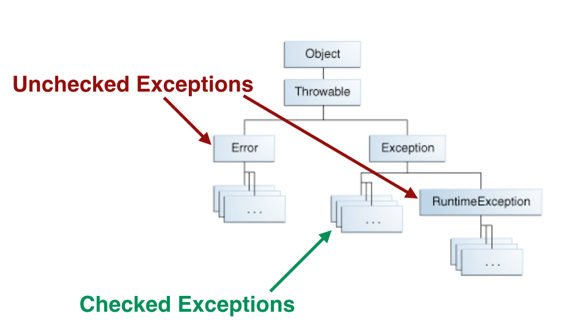

readFile {
open the file;
determine its size;
allocate that much memory;
read the file into memory;
close the file;
}errorCodeType readFile {
initialize errorCode = 0;
open the file;
if (theFileIsOpen) {
determine the length of the file;
if (gotTheFileLength) {
allocate that much memory;
if (gotEnoughMemory) {
read the file into memory;
if (readFailed) {
errorCode = -1;
}
} else {
errorCode = -2;
}
} else {
errorCode = -3;
}
close the file;
if (theFileDidntClose && errorCode == 0) {
errorCode = -4;
} else {
errorCode = errorCode and -4;
}
} else {
errorCode = -5;
}
return errorCode;
}readFile {
try {
open the file;
determine its size;
allocate that much memory;
read the file into memory;
close the file;
} catch (fileOpenFailed) {
doSomething;
} catch (sizeDeterminationFailed) {
doSomething;
} catch (memoryAllocationFailed) {
doSomething;
} catch (readFailed) {
doSomething;
} catch (fileCloseFailed) {
doSomething;
}try {
some code here
} catch () {
;
} finally {
;
} …public void writeList() throws IOException, IndexOutOfBoundsException {...}public void checkAmout(int amount) throws NegativeAmoutException {
if (amount < 0) {
throw new NegativeAmountException();
}
}
import java.io.File;
import java.io.FileNotFoundException;
import java.io.FileReader;
public class testClass {
public static void main(String args[]) {
File file = new File("E://file.txt");
try {
FileReader fr = new FileReader(file);
} catch (FileNotFoundException e) {
e.printStackTrace();
}
}
} import java.io.*;
public class ExcepTest {
public static void main(String[] args) {
int a[] = new int[2];
try {
System.out.println("Access elements three:" + a[3]);
} catch(ArrayIndexOutOfBoundsException e) {
System.out.println("Exception thrown :" +e);
}
System.out.println("Out of the block");
}
}public class ExcepTest {
public static void main(String args[]) {
int a[] = new int[2];
try {
System.out.println("Access element three :" + a[3]);
} catch(ArrayIndexOutOfBoundsException e) {
System.out.println("Exception thrown :" + e);
} finally {
a[0] = 6;
System.out.println("First element value: " + a[0]);
System.out.println("The finally statement is executed");
}
}
}public class ExceptionTesting {
public static void main(String[] args) {
method1();
}
public static void method1() { method11(); }
public static void method11() { method111(); }
public static void method111() throws NullPointerException {
int[] ar = new int[2];
System.out.println(ar[3]);
}
}Exception in thread "main" java.lang.ArrayIndexOutOfBoundsException: 3
at ExceptionTesting.method111(ExceptionTesting.java:11)
at ExceptionTesting.method11(ExceptionTesting.java:8)
at ExceptionTesting.method1(ExceptionTesting.java:7)
at ExceptionTesting.main(ExceptionTesting.java:4)BankAccount acct = null;
// ...
// Get a BankAccount object
// ...
// Check to ensure we have one
assert acct != null : "Object Null";import java.io.IOException;
public class AssertionTest3 {
public static void main(String argv[]) throws IOException {
System.out.print("Enter your marital status: ");
int c = System.in.read();
switch ((char) c) {
case 's':
case 'S': System.out.println("Single"); break;
case 'm':
case 'M': System.out.println("Married"); break;
case 'd':
case 'D': System.out.println("Divorced"); break;
default: assert !true : "Invalid Option"; break;
}
}
} [sgeorgiou@aiolos]$ java -ea AssertionTest3
Enter your marital status: n
Exception in thread "main" java.lang.AssertionError: Invalid Option
at AssertionTest3.main(AssertionTest3.java:15)